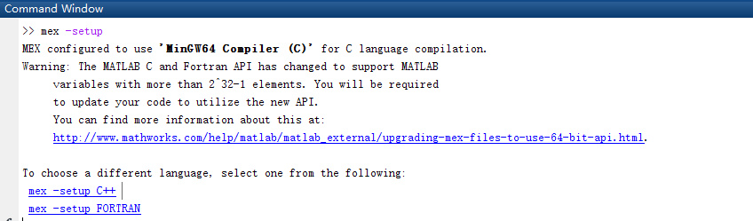

Windows的MATLAB中用C语言写SFunction的一些坑
1.测试环境
- 操作系统：Windows 10, 64bit
- 编译器：MinGW64
- 32位系统请下载对应的32位版本
- MATLAB2017a
- 2017a之后会略有不同
2. 配置环境与流程
-
下载编译器MinGW64，对于64位系统而言，需要下载个安装器，可以安装相应版本的gcc编译器，我选择的是gcc-4.9.4，在测试环境中可以正常运行
- 安装器是mingw-w64-install，安装时注意选择64位，同时安装完了还有一个坑：空格。
- 下载器默认的安装路径"C:Files-w64_64-4.9.4-win32-seh-rt_v5-rev0"是包含有空格的，MATLAB并不能识别该路径，所以可以把mingw64移动到不含空格的路径下，比如"C:"。
-
验证一下：
setenv('MW_MINGW64_LOC','C:\mingw64') % 先配置环境
mex -setup
输出如下图所示，这样MinGW编译器就配置好了。

3. a + b 编译测试
setenv('MW_MINGW64_LOC','C:\mingw64')
myFunctionName = 'SFunctionName'
def = legacy_code('initialize');
def.SFunctionName = myFunctionName ;
% 注意，输入和输出的变量的名称只能是u1,u2...和y1,y2...
def.OutputFcnSpec = 'double y1 = add_2(double u1, double u2)';
% 设置用到的头文件或者源文件
def.HeaderFiles = {'add_2.h'};
def.SourceFiles = {'add_2.c}
def.InitializeConditionsFcnSpec = 'buffer_init()';
legacy_code('sfcn_cmex_generate', def);
legacy_code('compile', def) ;
以上代码可以在MATLAB中快捷编译，并且生成Simulink可用的文件"add_2.mex64”，在Simulink中加入S-Function模块，并且将名字设置为"add_2"即可。
add_2.c就可以直接写一个两个数相加的程序验证一下就好了; add_2.h写个函数声明也就可以了。
// add_2.c
#include "add_2.h"
double add_2(double a, double b){
return a + b ;
}
// add_2.h
#ifndef ADD_2_H
#define ADD_2_H
double add_2(double a, double b);
#endif